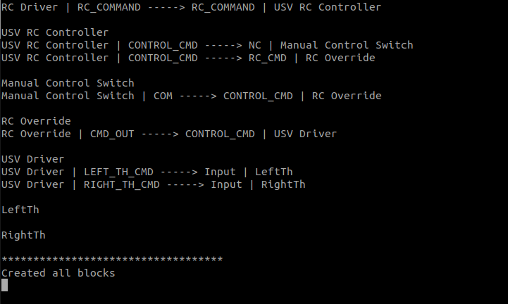

Operating the Marine X
This guide provides a detailed overview of the terminal commands required to operate the Marine X Unmanned Surface Vessel (USV).
Connecting to the Raspberry and TX2:
Ensure the USV is powered on.
- Connect to the ASUS router (KU_pool_c00058):
Access the router administration page: http://router.asus.com/Main_Login.asp
Input the following credentials: username: admin & password: KU_Marine_X
You can now view the IP addresses of both the Raspberry Pi and TX2 by clicking on the view list.
Open a terminal and type
roscore
Note
The IPs for both are statics however check the client IP just in case
Note
The TX2 is labeled as mbzirc-humais while the Raspberry Pi with the Navio2 is named navio.
Access Remote Control
2. Modify the ROS master and input your IP address:
sudo nano .bashrc
Note
Only change the ROS_MASTER_URI while keeping the port address (.11311).
source .bashrc
Note
At this stage, you should already have a terminal running roscore
3. Run the USV firmware
Turn on futaba RC controller on and make sure the left knob is inialized by being all the way down
source the package then run the firmware:
source catkin_ws/devel/setup.bash
Run the firmware:
rosrun usv_firmware usv_node
4. Calibrate the RC controller
Open new terminal
rosservice call /calibrate_rc "data: true"
Note
Move the right knob in a circule
rosservice call /calibrate_rc "data: false"
Note
The USV_firmware terminal should display a “calibration successful” message.
5. Activate the arm_usv
rosservice call /arm_usv "data: true"
Note
The USV_firmware terminal should display an “arm called” message, allowing you to control the thrusters with the RC.
Access the camera through TX2
1. SSH to the TX2 password: mbzirc:
ssh mbzirc-usv@192.168.50.38
2. Modify the ROS master and input your IP address:
sudo nano .bashrc
source .bashrc
3. Lanuch the camera:
roslaunch zed_wrapper zedm.launch
Open a new terminal and execute the following command:
rqt